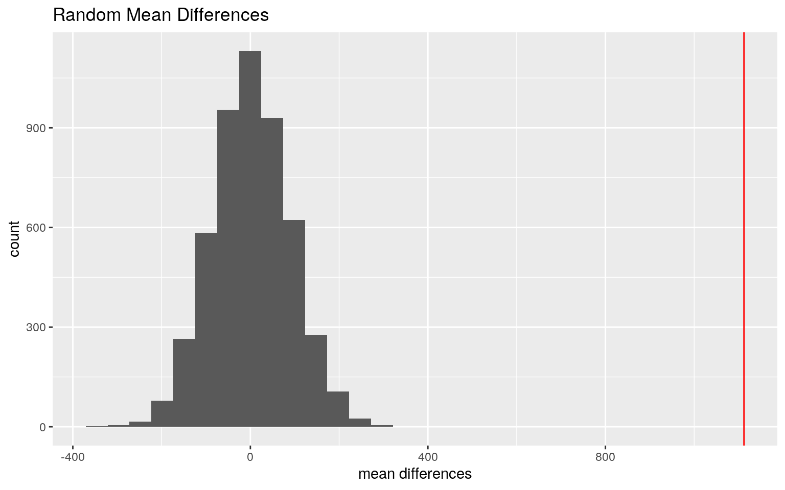

Introduction
\(~\)
#install.packages("Epi")
library(Epi)
data(births)
library(tidyverse)\(~\)
This data set contains data from 500 singleton births in a London Hospital. It has 8 variables: id, an identification variable for the mother and child; bweight, the birthweight of the child; lowbw, which tracks low birth weight with a value of 1 for babies born below 2500 g and 0 for babies born above; gestwks which which is the gestation period; preterm, which designates whether or not the baby was preterm; matage, the age of the mother; hyp, whether or not the mother had hypertension; and sex 1 for male, 2 for female.
\(~\)
MANOVA
man <- manova(cbind(bweight, gestwks, matage) ~ preterm, data = births)
summary(man)## Df Pillai approx F num Df den Df Pr(>F)
## preterm 1 0.5763 220.35 3 486 < 2.2e-16 ***
## Residuals 488
## ---
## Signif. codes: 0 '***' 0.001 '**' 0.01 '*' 0.05 '.' 0.1
' ' 1summary(aov(man))## Response bweight :
## Df Sum Sq Mean Sq F value Pr(>F)
## preterm 1 67907586 67907586 250.3 < 2.2e-16 ***
## Residuals 488 132394957 271301
## ---
## Signif. codes: 0 '***' 0.001 '**' 0.01 '*' 0.05 '.' 0.1
' ' 1
##
## Response gestwks :
## Df Sum Sq Mean Sq F value Pr(>F)
## preterm 1 1499.2 1499.16 653.43 < 2.2e-16 ***
## Residuals 488 1119.6 2.29
## ---
## Signif. codes: 0 '***' 0.001 '**' 0.01 '*' 0.05 '.' 0.1
' ' 1
##
## Response matage :
## Df Sum Sq Mean Sq F value Pr(>F)
## preterm 1 1.7 1.6787 0.1102 0.7401
## Residuals 488 7434.7 15.2351
##
## 10 observations deleted due to missingnesspairwise.t.test(births$bweight, births$preterm, p.adj = "none")##
## Pairwise comparisons using t tests with pooled SD
##
## data: births$bweight and births$preterm
##
## 0
## 1 <2e-16
##
## P value adjustment method: nonepairwise.t.test(births$gestwks, births$preterm, p.adj = "none")##
## Pairwise comparisons using t tests with pooled SD
##
## data: births$gestwks and births$preterm
##
## 0
## 1 <2e-16
##
## P value adjustment method: nonepairwise.t.test(births$matage, births$preterm, p.adj = "none")##
## Pairwise comparisons using t tests with pooled SD
##
## data: births$matage and births$preterm
##
## 0
## 1 0.74
##
## P value adjustment method: noneThe MANOVA had a p-value of 2.2e-16. For each test, the chance of making a Type I error is 0.05, so in order to keep the overall Type I error rate, a Bonferroni correction must be made, dividing the usual alpha of .05 by the number of tests performed(9), which would make it 0.0056. The MANOVA was significant, so preterm births varies significantly by at least one of the variables. According to the ANOVA and pairwise tests, there was a significant difference in preterm births by birth weight and gestational weeks, but not maternal age. MANOVA has a lot of assumptions, such as random samples and independent observations, which I cannot really speak on because I was not involved in the collection of this data, that there is multivariate normality of dependent/response variables, that there is homogeneity of within-group covariance matrices, a linear relationship among dependent/response variables, that there are no extreme outliers, and that the dependent/response variables are not too related. It is unlikely this data meets the assumptions required for the MANOVA testing as there are so many assumptions.
\(~\)
Randomization
set.seed(348)
premie <- births %>% na.omit() %>% filter(preterm == 1)
ontime <- births %>% na.omit() %>% filter(preterm == 0)
mead <- mean(ontime$bweight) - mean(premie$bweight)
mead## [1] 1112.175diffs<-vector()
dat <- births %>% na.omit() %>% select(bweight, preterm)
for(i in 1:5000){
temp <- dat %>% mutate(preterm = sample(dat$preterm))
diffs[i] <- temp %>% summarize(mean(bweight[preterm == 0]) - mean(bweight[preterm == 1])) %>% pull
}
#quantile(diffs, probs = c(.025, 0.975))
mean(diffs > mead) #pvalue for original bweight## [1] 0The null hypothesis is that being preterm had no effect on the birth weight of a baby, and the alternative hypothesis is that being preterm had an effect on the birth weight of the baby. The p-value is 0, which is very small and well below the threshold of 0.05, so we can reject the null hypothesis. this indicates that there is in fact a mean difference in birth weight for preterm and full term babies.
diffs <- data_frame(diffs)
diffs %>% ggplot(aes(x=diffs)) + geom_histogram() + geom_vline(xintercept = mead, color = "red") + labs(x = "mean differences", title = "Random Mean Differences") From this graph we can see the random mean differences are very different from the true mean difference (shown in red).
\(~\)
Linear Regression
library(lmtest)
birthdat <- births %>% mutate(c_matage = matage - mean(matage, na.rm=T), c_bweight = bweight - mean(bweight, na.rm=T), c_gestwks = gestwks - mean(gestwks, na.rm=T))
fit <- lm(c_gestwks~c_bweight*sex, data=birthdat)
summary(fit)##
## Call:
## lm(formula = c_gestwks ~ c_bweight * sex, data =
birthdat)
##
## Residuals:
## Min 1Q Median 3Q Max
## -7.1782 -1.0038 0.1673 1.0224 4.8593
##
## Coefficients:
## Estimate Std. Error t value Pr(>|t|)
## (Intercept) -0.6548427 0.2261550 -2.896 0.003955 **
## c_bweight 0.0012046 0.0003530 3.413 0.000697 ***
## sex 0.4745840 0.1450877 3.271 0.001148 **
## c_bweight:sex 0.0009701 0.0002270 4.273 2.32e-05 ***
## ---
## Signif. codes: 0 '***' 0.001 '**' 0.01 '*' 0.05 '.' 0.1
' ' 1
##
## Residual standard error: 1.584 on 486 degrees of freedom
## (10 observations deleted due to missingness)
## Multiple R-squared: 0.5346, Adjusted R-squared: 0.5317
## F-statistic: 186.1 on 3 and 486 DF, p-value: < 2.2e-16exp(coeftest(fit))##
## t test of coefficients:
##
## Estimate Std. Error t value Pr(>|t|)
## (Intercept) 0.51952 1.25377 0.0553 1.004
## c_bweight 1.00121 1.00035 30.3471 1.001
## sex 1.60735 1.15614 26.3380 1.001
## c_bweight:sex 1.00097 1.00023 71.7668 1.000The intercept is -0.65. This means that for a male baby born at an average birth weight, he is likely to be c_gestwks is likely -0.65, or he is born 0.65 weeks earlier than average. For a male baby, c_gestwks increases by 1.00 for each gram increase in birth weight. For a baby of average weight, they are likely to be born 1.61 weeks later than average if they a girl. For a female baby, they are likely to be born 1.00 week later for each gram increase in weight. Since the R^2 is 0.53, 0.53 of the variation is explained by this model.
\(~\)
birthdat <- birthdat %>% mutate(Sex = ifelse(sex == 1, "Male", "Female"))
doop <- birthdat %>% na.omit() %>% ggplot(aes(c_bweight, c_gestwks)) + geom_point(aes(color = Sex)) + geom_smooth(method = 'lm',se=F, color = "dark red") + labs(x = "Centered Birth Weight (grams)", y = "Centered Gestation (weeks)", title = "Gestation by Birth Weight and Sex")
doopBased off this graph, we can see that this model does not meet the assumptions of linearity as both birth weight and gestation weeks have far more low values than they do high values (possibly due to natural limits on both weight and gestation and potentially due to practices such as induction). The data looks pretty linear based of this graph.
bptest(fit)##
## studentized Breusch-Pagan test
##
## data: fit
## BP = 67.039, df = 3, p-value = 1.837e-14Since the p-value of the Breusch-Pagan test is less than 0.05, we can reject the null hypothesis that this data is homoskedastic, and say that it is heteroskedastic.
\(~\)
library(sandwich)
coeftest(fit,vcov=vcovHC(fit))##
## t test of coefficients:
##
## Estimate Std. Error t value Pr(>|t|)
## (Intercept) -0.65484274 0.24730602 -2.6479 0.008362 **
## c_bweight 0.00120462 0.00061253 1.9666 0.049795 *
## sex 0.47458399 0.15101586 3.1426 0.001777 **
## c_bweight:sex 0.00097014 0.00040013 2.4246 0.015690 *
## ---
## Signif. codes: 0 '***' 0.001 '**' 0.01 '*' 0.05 '.' 0.1
' ' 1Using the robust standard errors, birth weight (p-value = 0.0498), sex (p-value = 0.0018), and the interaction of birth weight and sex (p-value = 0.0157) all have a significant effect on the gestation period. There was no significant change in the coefficient using the robust SEs.
\(~\)
Linear Regression with Bootstrapping
boot_dat<- sample_frac(birthdat, replace=T)
# repeat 5000 times
set.seed(348)
samp_distn<-replicate(5000, {
boot_dat <- sample_frac(birthdat, replace=T) #take bootstrap sample of rows
fit <- lm(c_gestwks~c_bweight*sex, data=boot_dat) #fit model on bootstrap sample
coef(fit) #save coefs
})
## Estimated SEs
samp_distn %>% t %>% as.data.frame %>% summarize_all(sd)## (Intercept) c_bweight sex c_bweight:sex
## 1 0.2413312 0.0005895426 0.1467756 0.0003876The bootstrapped standard errors were slightly lower than the robust standard errors, at 0.2398, 0.0006, 0.1477, and 0.0004 instead of 0.2473, 0.0061, 0.1510, and 0.0004, respectively. Lowering the standard error would lower the p-value, making it more significant.
\(~\)
Predicting a Binary Variable (from two other variables)
fitprem <- glm(preterm ~ lowbw * hyp, data = births, family = "binomial")
summary(fitprem)##
## Call:
## glm(formula = preterm ~ lowbw * hyp, family =
"binomial", data = births)
##
## Deviance Residuals:
## Min 1Q Median 3Q Max
## -1.6340 -0.3293 -0.3293 -0.3293 2.4256
##
## Coefficients:
## Estimate Std. Error z value Pr(>|z|)
## (Intercept) -2.88759 0.22974 -12.569 <2e-16 ***
## lowbw 3.29306 0.39617 8.312 <2e-16 ***
## hyp 0.64688 0.52351 1.236 0.217
## lowbw:hyp -0.02273 0.80601 -0.028 0.978
## ---
## Signif. codes: 0 '***' 0.001 '**' 0.01 '*' 0.05 '.' 0.1
' ' 1
##
## (Dispersion parameter for binomial family taken to be 1)
##
## Null deviance: 375.99 on 489 degrees of freedom
## Residual deviance: 265.26 on 486 degrees of freedom
## (10 observations deleted due to missingness)
## AIC: 273.26
##
## Number of Fisher Scoring iterations: 5This model attempts to predict whether or not the baby was preterm based on whether they had low birth weight and if the mother had hypertension.
exp(-2.88759)## [1] 0.05571031exp(3.29306)## [1] 26.92513exp(0.64688)## [1] 1.909574exp(-0.02273)## [1] 0.9775264Having a low birth weight increased the odds that the baby was born preterm by 26.93, and being born to a mother with hypertension by 1.98. Having both a low birth weight and being born to a mother with hypertension put the odds at 0.978 compared to a baby with normal weight and a non-hypertensive mother. Low birth weight was a significant predictor, but a mother with hypertension was not a significant predictor, and neither was having both low birth weight and a hypertensive mother.
\(~\)
prob <- predict(fitprem, type = "response") %>% na.omit()
birt <- births %>% na.omit()
table(predict=as.numeric(prob>.5),truth=birt$preterm)%>%addmargins## truth
## predict 0 1 Sum
## 0 406 25 431
## 1 21 38 59
## Sum 427 63 490Here is the confusion matrix
class_diag<-function(probs,truth){
tab<-table(factor(probs>.5,levels=c("FALSE","TRUE")),truth)
acc=sum(diag(tab))/sum(tab)
sens=tab[2,2]/colSums(tab)[2]
spec=tab[1,1]/colSums(tab)[1]
ppv=tab[2,2]/rowSums(tab)[2]
if(is.numeric(truth)==FALSE & is.logical(truth)==FALSE) truth<-as.numeric(truth)-1
#CALCULATE EXACT AUC
ord<-order(probs, decreasing=TRUE)
probs <- probs[ord]; truth <- truth[ord]
TPR=cumsum(truth)/max(1,sum(truth))
FPR=cumsum(!truth)/max(1,sum(!truth))
dup<-c(probs[-1]>=probs[-length(probs)], FALSE)
TPR<-c(0,TPR[!dup],1); FPR<-c(0,FPR[!dup],1)
n <- length(TPR)
auc<- sum( ((TPR[-1]+TPR[-n])/2) * (FPR[-1]-FPR[-n]) )
data.frame(acc,sens,spec,ppv,auc)
}
class_diag(prob, birt$preterm)## acc sens spec ppv auc
## 1 0.9061224 0.6031746 0.9508197 0.6440678 0.7948218The accyracy of this model is 0.906, which is pretty good. The sensitivity is 0.603, which means that a fair few true positives get missed, but the specificity is 0.951, which is pretty good. The precision is 0.644, which is not great, and the AUC is 0.795 which is fair.
birt$logit<-predict(fitprem, type="link")
birt %>% mutate(preterm = as.factor(preterm)) %>% ggplot() + geom_density(aes(logit, color = preterm, fill = preterm), alpha = .4) +
theme(legend.position = c(.85,.85)) + geom_vline(xintercept = 0) + xlab("logit (log-odds)") +
geom_rug(aes(logit, color = preterm))library(plotROC)
ROCplot<- births %>% na.omit() %>% ggplot() + geom_roc(aes(d = preterm, m = prob), n.cuts = 0)
ROCplotcalc_auc(ROCplot)## PANEL group AUC
## 1 1 -1 0.7948218The AUC is 0.795, which is fair. This means that the model does a decent, but not great job at predicting preterm births.
\(~\)
Predicting a Binary Variable (from all other variables)
idbirths <- births %>% na.omit() %>% select(-id, -gestwks)
fitid <- glm(preterm~., data = idbirths, family = "binomial")
prob <- predict(fitid, type = "response") %>% na.omit()
class_diag(prob, idbirths$preterm)## acc sens spec ppv auc
## 1 0.9081633 0.4285714 0.9789227 0.75 0.9113416summary(fitid)##
## Call:
## glm(formula = preterm ~ ., family = "binomial", data =
idbirths)
##
## Deviance Residuals:
## Min 1Q Median 3Q Max
## -2.0931 -0.3826 -0.2113 -0.1017 3.0638
##
## Coefficients:
## Estimate Std. Error z value Pr(>|z|)
## (Intercept) 8.3518019 2.5077608 3.330 0.000867 ***
## bweight -0.0035152 0.0006178 -5.690 1.27e-08 ***
## lowbw -0.3273172 0.6206224 -0.527 0.597915
## matage 0.0074091 0.0464692 0.159 0.873321
## hyp 0.1607692 0.4510927 0.356 0.721541
## sex -0.3850509 0.3644640 -1.056 0.290747
## ---
## Signif. codes: 0 '***' 0.001 '**' 0.01 '*' 0.05 '.' 0.1
' ' 1
##
## (Dispersion parameter for binomial family taken to be 1)
##
## Null deviance: 375.99 on 489 degrees of freedom
## Residual deviance: 215.78 on 484 degrees of freedom
## AIC: 227.78
##
## Number of Fisher Scoring iterations: 6I omitted gestwks because it directly correlates to preterm. The model was significant. The model had an accuracy of 0.908, which is very good, a sensitivity of 0.429 which is a little bad and means this model misses a lot of true positives, a specificity of 0.979 which is very good, a precision of 0.75 which is okay, and an AUC of 0.911 which is great.
set.seed(348)
k=10
# your code here
data<- idbirths %>% sample_frac#randomly order rows
folds <- ntile(1:nrow(data),n=10) #create folds
diags<-NULL
for(i in 1:k){
## Create training and test sets
train<-data[folds != i, ]
test<-data[folds == i, ]
truth<-test$preterm ## Truth labels for fold i
## Train model on training set (all but fold i)
fit <-glm(preterm~., data = train, family = "binomial")
## Test model on test set (fold i)
probs<-predict(fit, newdata = test, type = "response")
## Get diagnostics for fold i
diags<-rbind(diags, class_diag(probs, truth))
}
summarize_all(diags,mean) #average diagnostics across all k folds## acc sens spec ppv auc
## 1 0.9061224 0.4562698 0.9761263 0.7580952 0.9134367This model performed very well out of sample. In fact, all of the values were about the same or higher out of sample. The accuracy was slightly lower at 0.906, the sensitivity was slightly higher at 0.456, the specificity was slightly lower at 0.976, the precision was slightly higher at 0.758, and the AUS was slightly higher at 0.913.
library(glmnet)
set.seed(348)
# your code here
library(glmnet)
y<-as.matrix(idbirths$preterm) #grab response
x<-model.matrix(preterm~.,data=idbirths)[,-1] #grab predictors
head(x)## bweight lowbw matage hyp sex
## 1 2974 0 34 0 2
## 3 2620 0 35 0 2
## 4 3751 0 31 0 1
## 5 3200 0 33 1 1
## 6 3673 0 33 0 2
## 7 3628 0 29 0 2cv <- cv.glmnet(x,y) #picks an optimal value for lambda through 10-fold CV
{plot(cv$glmnet.fit, "lambda", label=TRUE); abline(v = log(cv$lambda.1se)); abline(v = log(cv$lambda.min),lty=2)}cv<-cv.glmnet(x,y,family="binomial")
lasso<-glmnet(x,y,family="binomial",lambda=cv$lambda.1se)
coef(lasso)## 6 x 1 sparse Matrix of class "dgCMatrix"
## s0
## (Intercept) 1.209632243
## bweight -0.001093144
## lowbw 0.497196401
## matage .
## hyp .
## sex .Both lowbw and bweight were retained in this model, which is not surprising seeing as they are both determined by that birtweight of the baby.
set.seed(348)
k=10
# your code here
data<- idbirths %>% sample_frac#randomly order rows
folds <- ntile(1:nrow(data),n=10) #create folds
diags<-NULL
for(i in 1:k){
## Create training and test sets
train<-data[folds != i, ]
test<-data[folds == i, ]
truth<-test$preterm ## Truth labels for fold i
## Train model on training set (all but fold i)
fit <-glm(preterm~bweight+lowbw, data = train, family = "binomial")
## Test model on test set (fold i)
probs<-predict(fit, newdata = test, type = "response")
## Get diagnostics for fold i
diags<-rbind(diags, class_diag(probs, truth))
}
summarize_all(diags,mean) #average diagnostics across all k folds## acc sens spec ppv auc
## 1 0.9061224 0.4562698 0.9765123 0.7530952 0.9126838This model had an AUC of 0.913, which is the same as the out of the out of sample AUC in the regression above and slightly higher than the in sample AUC of that regression. The AUC is great and seems to indicate that the model does a decent job of predicting preterm births, even though both the predicting variables are based on the same pieces of data.